pacman::p_load(sfdep, sf, tidyverse, tmap, dplyr, plotly, lubridate, spdep, outbreaks)Take-home Exercise 2: Application of Spatial and Spatio-temporal Analysis Methods to Discover the Distribution of Dengue Fever in Tainan City, Taiwan
1.0 Background
The last significant outbreak of dengue fever in Taiwan was recorded in 2015, with 43,000 dengue cases and 228 deaths. In 2023, 26,703 cases were recorded with 25K being from Tainan City.
1.1 Objectives & Approach
The goal of this exercise is to determine if the distribution of dengue cases in Tainan are spatially and temporally dependent, and if so, to detect the locations of the clusters.
We will:
visualise the data using mapping tools,
conduct global & local spatial autocorrelation analysis,
perform emerging hotspot analysis.
The areas selected are the Tainan City counties D01, D02, D04, D06, D07, D08, D32 & D39 during the epidemiology week 31-50 of 2023.
2 Package Installation
2.1 Data Preparation
| Data | Type | Description |
|---|---|---|
| TAIWAN_VILLAGE_2020 | Geospatial .shp |
Geospatial data of Taiwan village boundaries |
| Dengue_Daily.csv | Aspatial .csv |
Aspatial data of reported dengue cases in Taiwan since 1998 |
2.1.0 TAINAN_VILLAGE Data
First-time load of the geospatial data and identifying its CRS.
village_sf <- st_read(dsn = "../../data/TaiwanVillage",
layer = "TAINAN_VILLAGE")Reading layer `TAINAN_VILLAGE' from data source
`C:\aidan445\IS415-GAA\data\TaiwanVillage' using driver `ESRI Shapefile'
Simple feature collection with 649 features and 10 fields
Geometry type: POLYGON
Dimension: XY
Bounding box: xmin: 120.0269 ymin: 22.88751 xmax: 120.6563 ymax: 23.41374
Geodetic CRS: TWD97st_crs(village_sf)Coordinate Reference System:
User input: TWD97
wkt:
GEOGCRS["TWD97",
DATUM["Taiwan Datum 1997",
ELLIPSOID["GRS 1980",6378137,298.257222101,
LENGTHUNIT["metre",1]]],
PRIMEM["Greenwich",0,
ANGLEUNIT["degree",0.0174532925199433]],
CS[ellipsoidal,2],
AXIS["geodetic latitude (Lat)",north,
ORDER[1],
ANGLEUNIT["degree",0.0174532925199433]],
AXIS["geodetic longitude (Lon)",east,
ORDER[2],
ANGLEUNIT["degree",0.0174532925199433]],
USAGE[
SCOPE["Horizontal component of 3D system."],
AREA["Taiwan, Republic of China - onshore and offshore - Taiwan Island, Penghu (Pescadores) Islands."],
BBOX[17.36,114.32,26.96,123.61]],
ID["EPSG",3824]]We see that the geospatial data is using the TWD97 EPSG 3824 CRS.
Inspecting the data table, we see that the columns for COUNTYNAME, COUNTYID & COUNTYCODE all point to the same “臺南市/Tainan City” reference, so we can drop these values to reduce the clutter. (NOTE also removed as it has no impact on our analysis)
prunedvillage_sf <- village_sf %>%
select(-COUNTYNAME, -COUNTYID, -COUNTYCODE, -NOTE)We can now select only the counties of D01, D02, etc. previously specified.
prunedvillage_sf <- prunedvillage_sf %>%
filter(TOWNID %in% c("D01", "D02", "D04", "D06", "D07", "D08", "D32", "D39"))To speed up future referencing of this dataframe, we can save it as an RDS.
# write_rds(prunedvillage_sf, "../../data/TaiwanVillage/prunedvillage_sf.rds")prunedvillage_sf <- read_rds("../../data/TaiwanVillage/prunedvillage_sf.rds")2.1.1 Dengue_Daily.csv Data
First-time load of the aspatial data.
dengue_sf <- read_csv("../../data/TaiwanDengue/Dengue_Daily.csv")Rows: 106861 Columns: 26
── Column specification ────────────────────────────────────────────────────────
Delimiter: ","
chr (23): 個案研判日, 性別, 年齡層, 居住縣市, 居住鄉鎮, 居住村里, 最小統計區, 最小統計區中心點X, 最小統計區中心點Y, 一級...
dbl (1): 確定病例數
date (2): 發病日, 通報日
ℹ Use `spec()` to retrieve the full column specification for this data.
ℹ Specify the column types or set `show_col_types = FALSE` to quiet this message.The output of the read_csv() command indicates that R recognises “發病日” as a date object, so we don’t have to transform it.
As we are only interested in the count of the dengue cases during a particular date window and their location (Tainan City only), we can select only the relevant columns from the table, namely the date of onset, town name, village name and the corresponding coordinate pair.
*The dates specified by epidemiology week are from 2023-08-01 to 2023-12-16
pruneddengue_sf <- dengue_sf %>%
filter(感染縣市 == "台南市" & 發病日 >= as.Date("2023-08-01") & 發病日 <= as.Date("2023-12-16")) %>%
select(發病日, 居住鄉鎮, 居住村里, 最小統計區中心點X, 最小統計區中心點Y)I will also rename the chosen columns to their English translations to simplify reading of the columns.We can use the same naming convention for town and village names as in the geospatial dataframe to make the columns more consistent.
pruneddengue_sf <- pruneddengue_sf %>%
rename('Date of Onset' = 發病日,
TOWNNAME = 居住鄉鎮,
VILLNAME = 居住村里,
X_Coord = 最小統計區中心點X,
Y_Coord = 最小統計區中心點Y)This yields a much tidier dataset to work with, but there are still a dozen or so null values under X & Y_Coords, which we can remove. (Null values for village name are still fine as they have their coordinate pair to be used for mapping)
pruneddengue_sf <- pruneddengue_sf %>%
filter(X_Coord != "None" & Y_Coord != "None")Finally, we see that the X & Y_Coords are not compatible with the village geospatial polygon data:
class(pruneddengue_sf$X_Coord)[1] "character"class(pruneddengue_sf$Y_Coord)[1] "character"In fact they are not even numerical data.
To address this, we can convert it into an sf object just like prunedvillage_sf on the same CRS 3824.
pruneddengue_sf$X_Coord <- as.numeric(pruneddengue_sf$X_Coord)
pruneddengue_sf$Y_Coord <- as.numeric(pruneddengue_sf$Y_Coord)
pruneddengue_sf <- st_as_sf(pruneddengue_sf, coords = c("X_Coord", "Y_Coord"), crs = 3824)Now that this has been standardised, we can save pruneddengue_sf as an RDS also.
# write_rds(pruneddengue_sf, "../../data/TaiwanDengue/pruneddengue_sf.rds")pruneddengue_sf <- read_rds("../../data/TaiwanDengue/pruneddengue_sf.rds")2.1.2 Visualising the Separate Datasets
The map of our chosen area of Tainan City:
tmap_mode('plot')tmap mode set to plottingtm_shape(prunedvillage_sf) +
tm_borders() +
tm_fill() +
tm_layout(title = "Study Area Layer")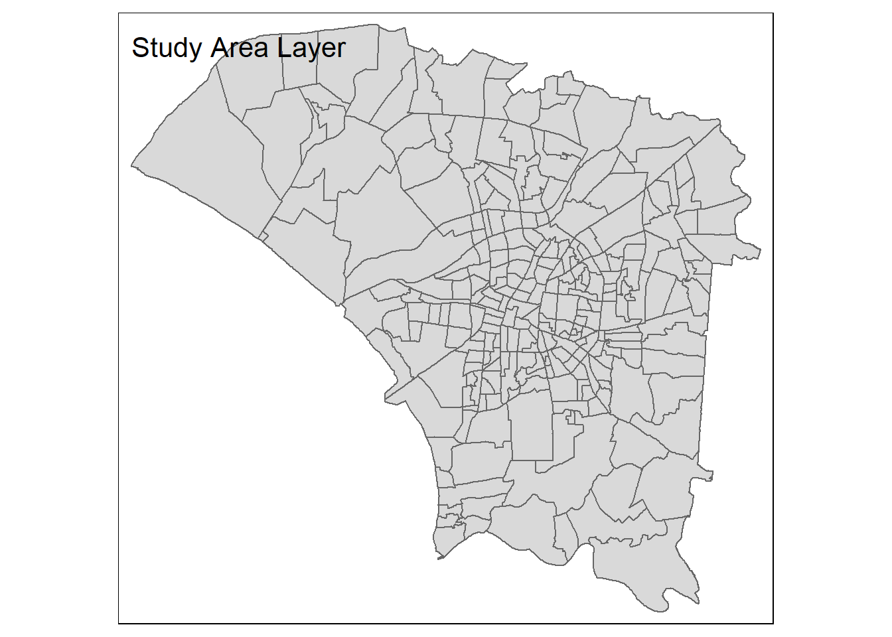
The map of dengue cases:
tmap_mode('plot')tmap mode set to plottingtm_shape(pruneddengue_sf) +
tm_dots() +
tm_layout(title = "Dengue Cases")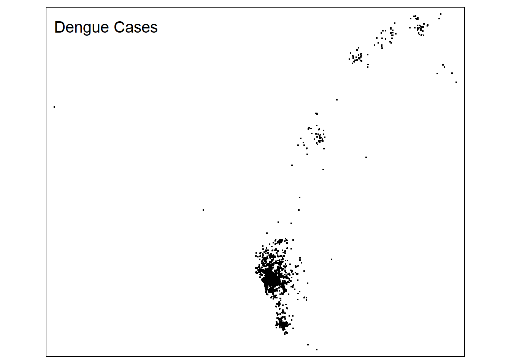
3 Overlaying Dengue Cases onto Study Layer
3.1 Intersection of prunedvillage_sf & pruneddengue_sf
We perform the first joining action on the 2 sf dataframes.
# dengue_on_village <- st_intersection(prunedvillage_sf, pruneddengue_sf)This required a very long execution time so I am choosing to save it as an RDS as well to avoid future computation.
# write_rds(dengue_on_village, "../../data/TaiwanVillage/dengue_on_village.rds")dengue_on_village <- read_rds("../../data/TaiwanVillage/dengue_on_village.rds")However during the intersection, the shared columns were not merged and there are entries containing “None” under the VILLNAME.1 column. We need to remove these and consolidate the intersected dataframe.
cleaned_dengue_on_village <- dengue_on_village %>%
filter(VILLNAME.1 != "None")
cleaned_dengue_on_village <- cleaned_dengue_on_village %>%
select(-c(TOWNNAME.1, VILLNAME.1))Again, we’ll save this as an RDS to avoid future computation.
# write_rds(cleaned_dengue_on_village, "../../data/TaiwanVillage/cleaned_dengue_on_village.rds")cleaned_dengue_on_village <- read_rds("../../data/TaiwanVillage/cleaned_dengue_on_village.rds")3.1.0 Initial Plot of Dengue Cases on Map (as dots)
Plotting this dengue layer on the map of our study area.
tm_shape(prunedvillage_sf) +
tm_polygons("TOWNID") +
tm_shape(cleaned_dengue_on_village) +
tm_dots(col = "black", size = 0.0001)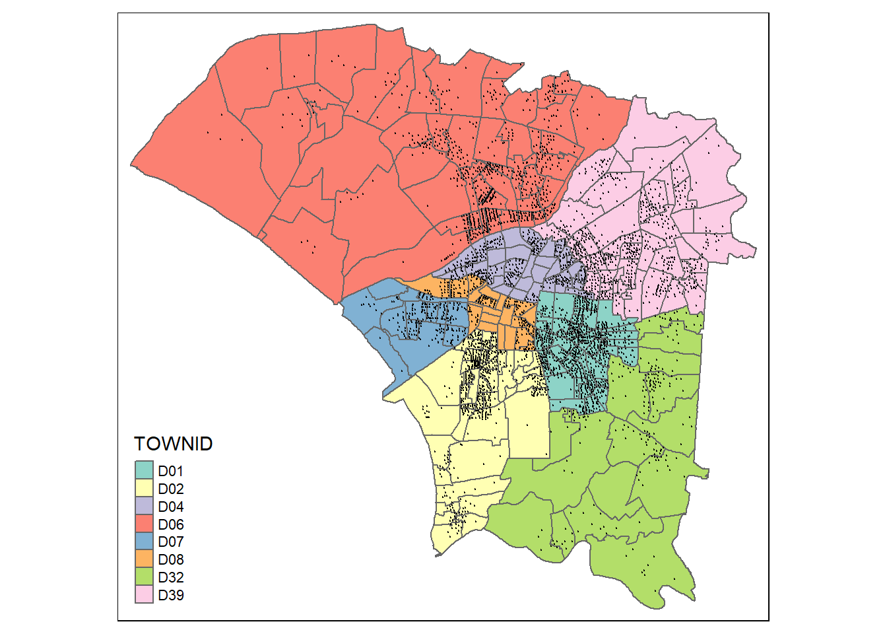
While this shows us the distribution of all the dengue cases in our study area, it is not very clear or intuitive where the highest-hit sectors are due to all the dots.
3.1.1 Plotting of Dengue Cases without dots
First we need to group the count of dengue cases by village to do away with the dots.
dengue_conc <- cleaned_dengue_on_village %>%
group_by(VILLNAME) %>%
summarise(Cases_per_village = n())We want to join this new dataframe with the village geospatial data to be able to create a choropleth map.
dengue_conc <- st_join(prunedvillage_sf, dengue_conc)We can now plot a map of the total dengue cases per village.
tmap_mode('plot')tmap mode set to plottingtm_shape(dengue_conc) +
tm_fill(col = "Cases_per_village",
style = "quantile",
palette = "Blues",
title = "Total Dengue Cases") +
tm_layout(main.title = "Total Dengue Cases per Village",
main.title.position = "center",
main.title.size = 1.2,
legend.height = 0.45,
legend.width = 0.35,
frame = TRUE) +
tm_borders(alpha = 0.5) +
tm_scale_bar() +
tm_grid(alpha =0.2)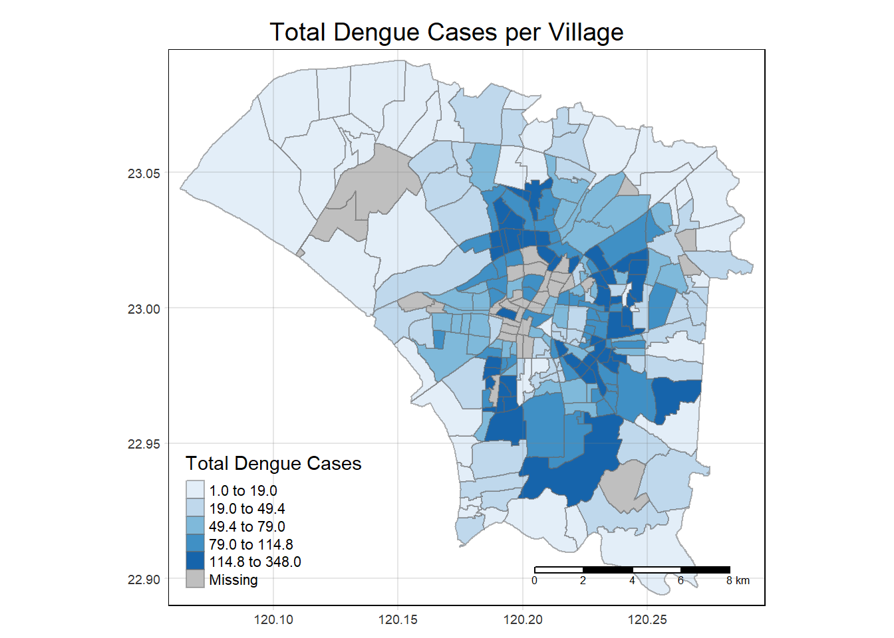
Unfortunately this has uncovered values that are “NA” under VILLNAME.y and under Cases_per_village. We need to remove these entries.
dengue_conc <- dengue_conc %>%
filter(!is.na(Cases_per_village))We can now plot the map again.
tmap_mode('plot')tmap mode set to plottingtm_shape(dengue_conc) +
tm_fill(col = "Cases_per_village",
style = "quantile",
palette = "Blues",
title = "Total Dengue Cases") +
tm_layout(main.title = "Total Dengue Cases per Village",
main.title.position = "center",
main.title.size = 1.2,
legend.height = 0.45,
legend.width = 0.35,
frame = TRUE) +
tm_borders(alpha = 0.5) +
tm_scale_bar() +
tm_grid(alpha =0.2)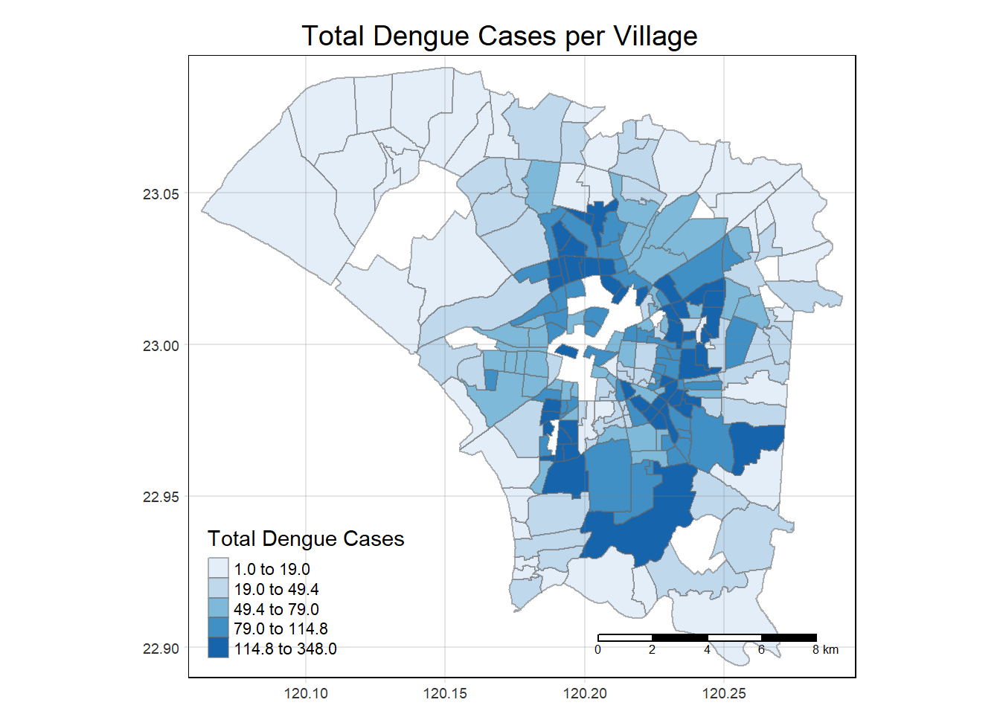
And we’ll save dengue_conc as an RDS for future reference.
# write_rds(dengue_conc, "../../data/TaiwanVillage/dengue_conc.rds")dengue_conc <- read_rds("../../data/TaiwanVillage/dengue_conc.rds")However the usefulness of knowing the total cases per sector is limited. It may only reflect that the population or population densities in these sectors are relatively high, or that the transmission vectors are more significant in these sectors.
3.1.2 Visualising Dengue Cases per County per Month
To see the true presence of dengue cases, we have to backtrack to the original dengue cases dataframe and group the cases by village and date of onset that correspond to the epidemiology weeks. To keep things simpler, we will group the cases by month, first looking at August.
dengue_aug <- pruneddengue_sf %>%
filter(`Date of Onset` >= as.Date("2023-08-01") & `Date of Onset` <= as.Date("2023-08-31")) %>%
group_by(VILLNAME) %>%
summarise(Cases_per_month = n())
dengue_aug <- st_join(prunedvillage_sf, dengue_aug)Now we can visualise this:
tmap_mode('plot')tmap mode set to plottingtm_shape(dengue_aug) +
tm_fill(col = "Cases_per_month",
style = "quantile",
palette = "Blues",
title = "Total Dengue Cases") +
tm_layout(main.title = "Total Dengue Cases per Village in August 2023",
main.title.position = "center",
main.title.size = 1.2,
legend.height = 0.45,
legend.width = 0.35,
frame = TRUE) +
tm_borders(alpha = 0.5) +
tm_scale_bar() +
tm_grid(alpha =0.2)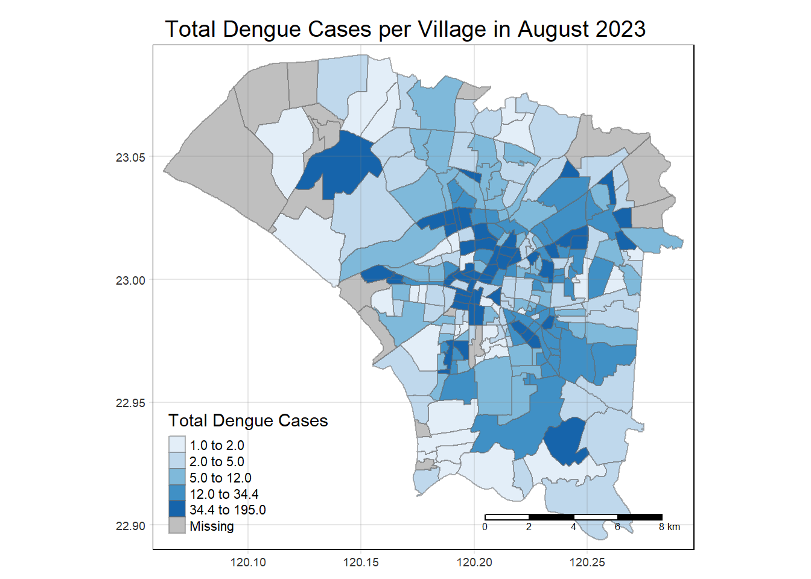
We can do another plot for September:
dengue_sept <- pruneddengue_sf %>%
filter(`Date of Onset` >= as.Date("2023-09-01") & `Date of Onset` <= as.Date("2023-09-30")) %>%
group_by(VILLNAME) %>%
summarise(Cases_per_month = n())
dengue_sept <- st_join(prunedvillage_sf, dengue_sept)tmap_mode('plot')tmap mode set to plottingtm_shape(dengue_sept) +
tm_fill(col = "Cases_per_month",
style = "quantile",
palette = "Blues",
title = "Total Dengue Cases") +
tm_layout(main.title = "Total Dengue Cases per Village in September 2023",
main.title.position = "center",
main.title.size = 1.2,
legend.height = 0.45,
legend.width = 0.35,
frame = TRUE) +
tm_borders(alpha = 0.5) +
tm_scale_bar() +
tm_grid(alpha =0.2)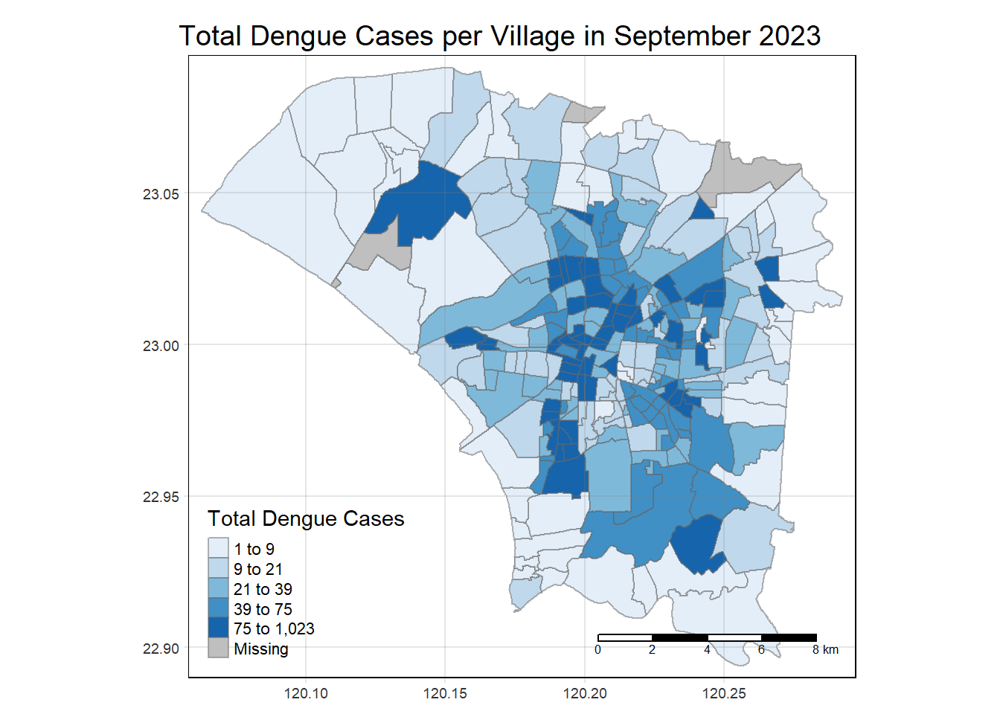
And now for October:
dengue_oct <- pruneddengue_sf %>%
filter(`Date of Onset` >= as.Date("2023-10-01") & `Date of Onset` <= as.Date("2023-10-31")) %>%
group_by(VILLNAME) %>%
summarise(Cases_per_month = n())
dengue_oct <- st_join(prunedvillage_sf, dengue_oct)tmap_mode('plot')tmap mode set to plottingtm_shape(dengue_oct) +
tm_fill(col = "Cases_per_month",
style = "quantile",
palette = "Blues",
title = "Total Dengue Cases") +
tm_layout(main.title = "Total Dengue Cases per Village in October 2023",
main.title.position = "center",
main.title.size = 1.2,
legend.height = 0.45,
legend.width = 0.35,
frame = TRUE) +
tm_borders(alpha = 0.5) +
tm_scale_bar() +
tm_grid(alpha =0.2)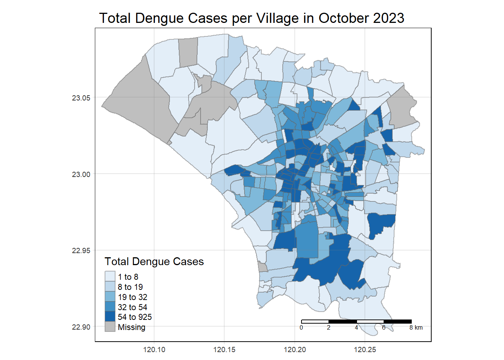
November:
dengue_nov <- pruneddengue_sf %>%
filter(`Date of Onset` >= as.Date("2023-11-01") & `Date of Onset` <= as.Date("2023-11-30")) %>%
group_by(VILLNAME) %>%
summarise(Cases_per_month = n())
dengue_nov <- st_join(prunedvillage_sf, dengue_nov)tmap_mode('plot')tmap mode set to plottingtm_shape(dengue_nov) +
tm_fill(col = "Cases_per_month",
style = "quantile",
palette = "Blues",
title = "Total Dengue Cases") +
tm_layout(main.title = "Total Dengue Cases per Village in November 2023",
main.title.position = "center",
main.title.size = 1.2,
legend.height = 0.45,
legend.width = 0.35,
frame = TRUE) +
tm_borders(alpha = 0.5) +
tm_scale_bar() +
tm_grid(alpha =0.2)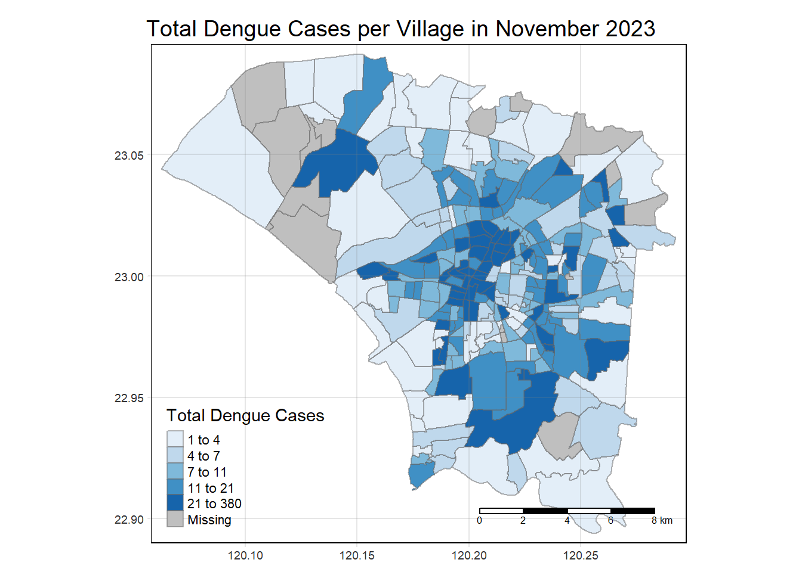
And finally December:
dengue_dec <- pruneddengue_sf %>%
filter(`Date of Onset` >= as.Date("2023-12-01") & `Date of Onset` <= as.Date("2023-12-16")) %>%
group_by(VILLNAME) %>%
summarise(Cases_per_month = n())
dengue_dec <- st_join(prunedvillage_sf, dengue_dec)tmap_mode('plot')tmap mode set to plottingtm_shape(dengue_dec) +
tm_fill(col = "Cases_per_month",
style = "quantile",
palette = "Blues",
title = "Total Dengue Cases") +
tm_layout(main.title = "Total Dengue Cases per Village in December 2023",
main.title.position = "center",
main.title.size = 1.2,
legend.height = 0.45,
legend.width = 0.35,
frame = TRUE) +
tm_borders(alpha = 0.5) +
tm_scale_bar() +
tm_grid(alpha =0.2)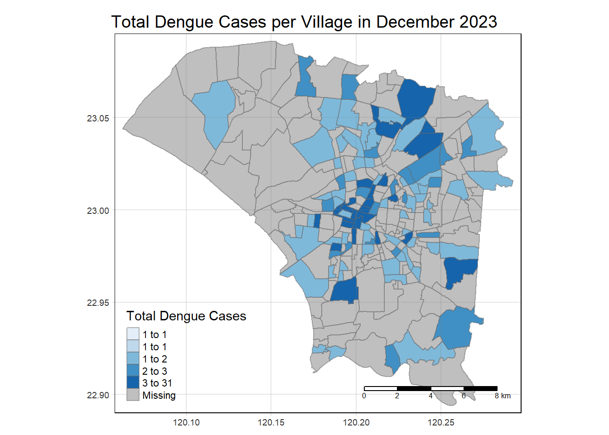
It appears that cases peaked in September and October, with their spread across many villages. When cases dipped in November and December, they were more concentrated in a few villages.
4 Global Spatial Autocorrelation Analysis
4.1 Deriving contiguity weights: Queen’s method
4.1.0 Simplifying the Data
As this component of the analysis is only concerned with spatial properties, we can revert to the original pruneddengue_sf dataframe.To prevent conflicts with the previous dataframes, we will create a new dataframe and regroup the dengue cases by village, performing the same treatment as above.
pruneddengue_1 <- pruneddengue_sf %>%
group_by(VILLNAME) %>%
summarise(Cases_per_village = n()) %>%
filter(!(VILLNAME == "None"))We can now join the data again and impute the NA values with 0, as missing values in this context would mean that there were no dengue cases in that village.
dengue_presc <- st_join(prunedvillage_sf, pruneddengue_1)
dengue_presc$Cases_per_village[is.na(dengue_presc$Cases_per_village)] <- 0We save this as an RDS for future use.
# write_rds(dengue_presc, "../../data/TaiwanVillage/dengue_presc.rds")dengue_presc <- read_rds("../../data/TaiwanVillage/dengue_presc.rds")4.1.1 Deriving the contiguity weights: Queen’s method
wm_q <- dengue_presc %>%
mutate(nb = st_contiguity(geometry),
wt = st_weights(nb, style = "W"),
.before = 1)Inspecting the dataframe:
glimpse(wm_q)Rows: 289
Columns: 11
$ nb <nb> <6, 126, 178>, <134, 137, 150, 189, 247>, <73, 74, 19…
$ wt <list> <0.3333333, 0.3333333, 0.3333333>, <0.2, 0.2, 0.2, …
$ VILLCODE <chr> "67000350032", "67000270011", "67000370005", "670003…
$ TOWNNAME <chr> "安南區", "仁德區", "中西區", "南區", "安南區", "安…
$ VILLNAME.x <chr> "青草里", "保安里", "赤嵌里", "大成里", "城北里", "…
$ VILLENG <chr> "Qingcao Vil.", "Bao'an Vil.", "Chihkan Vil.", "Dach…
$ TOWNID <chr> "D06", "D32", "D08", "D02", "D06", "D06", "D08", "D0…
$ TOWNCODE <chr> "67000350", "67000270", "67000370", "67000330", "670…
$ VILLNAME.y <chr> "青草里", "保安里", "赤嵌里", "大成里", "城北里", "…
$ Cases_per_village <dbl> 2, 21, 111, 29, 1, 12, 36, 33, 48, 106, 48, 26, 65, …
$ geometry <POLYGON [°]> POLYGON ((120.1176 23.08387..., POLYGON ((12…4.2 Computing Global Moran’s I
moranI <- global_moran(wm_q$Cases_per_village,
wm_q$nb,
wm_q$wt)
glimpse(moranI)List of 2
$ I: num 0.391
$ K: num 5.554.3 Performing Global Moran’s I Test
global_moran_test(wm_q$Cases_per_village,
wm_q$nb,
wm_q$wt)
Moran I test under randomisation
data: x
weights: listw
Moran I statistic standard deviate = 12.231, p-value < 2.2e-16
alternative hypothesis: greater
sample estimates:
Moran I statistic Expectation Variance
0.390624515 -0.003472222 0.001038270 4.4 Performing Global Moran’s I Permutation Test
To ensure reproducible results, we specify the seed used.
set.seed(1234)global_moran_perm(wm_q$Cases_per_village,
wm_q$nb,
wm_q$wt,
nsim = 99)
Monte-Carlo simulation of Moran I
data: x
weights: listw
number of simulations + 1: 100
statistic = 0.39062, observed rank = 100, p-value < 2.2e-16
alternative hypothesis: two.sided4.5 Analysis of Global Moran’s I Test Results
We see that the p-value is less than 0.05, so we can reject the null hypothesis that there is no spatial autocorrelation in the distribution of dengue cases in Tainan City.
In addition, because Moran’s I statistic is positive, we can infer that there are signs of clustering in the distribution of dengue cases.
5 Local Spatial Autocorrelation Analysis
5.1 Computing Local Moran’s I
lisa <- wm_q %>%
mutate(local_moran = local_moran(
Cases_per_village, nb, wt, nsim = 99),
.before = 1) %>%
unnest(local_moran)5.2 Visualising Local Moran’s I
tmap_mode("plot")tmap mode set to plottingtm_shape(lisa) +
tm_fill("ii") +
tm_borders(alpha = 0.5) +
tm_view(set.zoom.limits = c(6,8)) +
tm_layout(main.title = "Local Moran's I of Cases per Village",
main.title.size = 0.7)Variable(s) "ii" contains positive and negative values, so midpoint is set to 0. Set midpoint = NA to show the full spectrum of the color palette.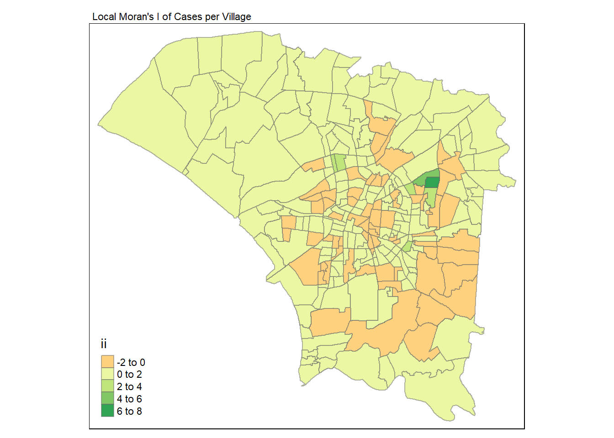
5.3 Visualising p-value of Local Moran’s I
tmap_mode("plot")tmap mode set to plottingtm_shape(lisa) +
tm_fill("p_ii_sim") +
tm_borders(alpha = 0.5) +
tm_layout(main.title = "p-value of Local Moran's I",
main.title.size = 0.7)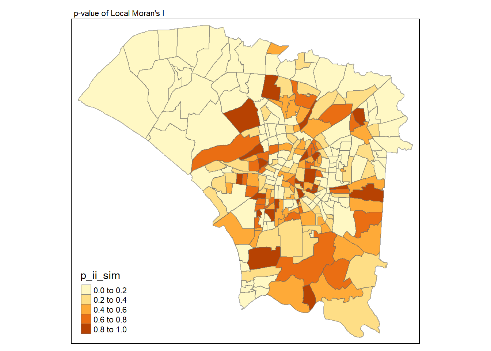
5.4 Visualising Local Moran’s I & p-value
tmap_mode("plot")tmap mode set to plottingmap1 <- tm_shape(lisa) +
tm_fill("ii") +
tm_borders(alpha = 0.5) +
tm_view(set.zoom.limits = c(6,8)) +
tm_layout(main.title = "Local Moran's I of Cases per Village",
main.title.size = 0.7)
map2 <- tm_shape(lisa) +
tm_fill("p_ii",
breaks = c(0, 0.001, 0.01, 0.05, 1),
labels = c("0.001", "0.01", "0.05", "Not sig")) +
tm_borders(alpha = 0.5) +
tm_layout(main.title = "p-value of Local Moran's I",
main.title.size = 0.7)
tmap_arrange(map1, map2, ncol = 2)Variable(s) "ii" contains positive and negative values, so midpoint is set to 0. Set midpoint = NA to show the full spectrum of the color palette.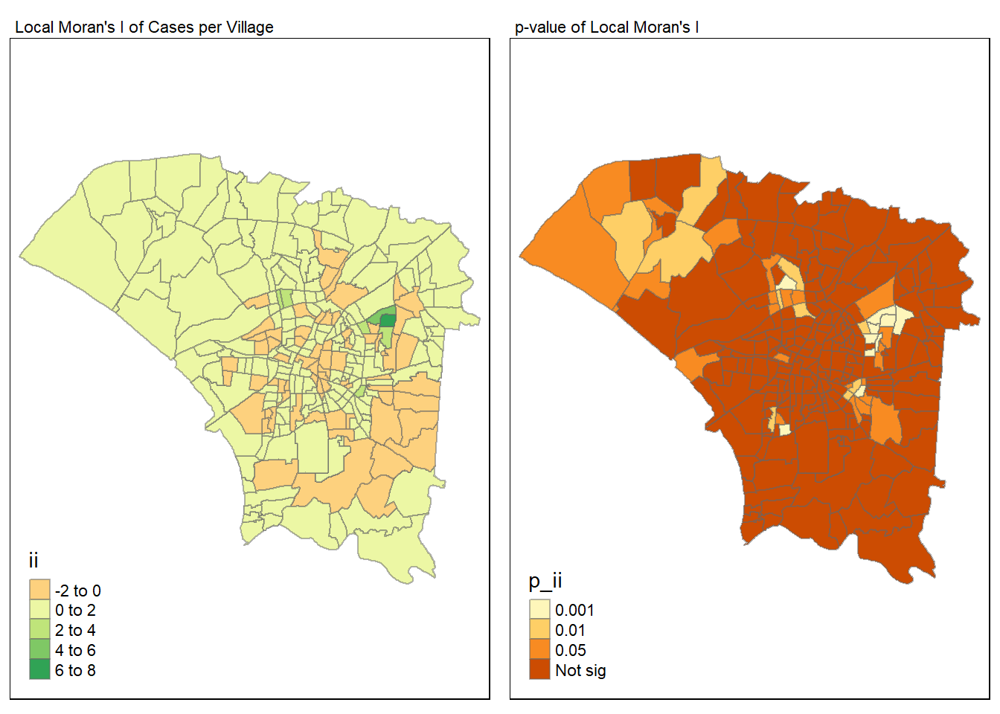
5.5 Visualising LISA Map
lisa_sig <- lisa %>%
filter(p_ii < 0.05)
tmap_mode("plot")tmap mode set to plottingtm_shape(lisa) +
tm_polygons() +
tm_borders(alpha = 0.5) +
tm_shape(lisa_sig) +
tm_fill("mean") +
tm_borders(alpha = 0.4) Warning: One tm layer group has duplicated layer types, which are omitted. To
draw multiple layers of the same type, use multiple layer groups (i.e. specify
tm_shape prior to each of them).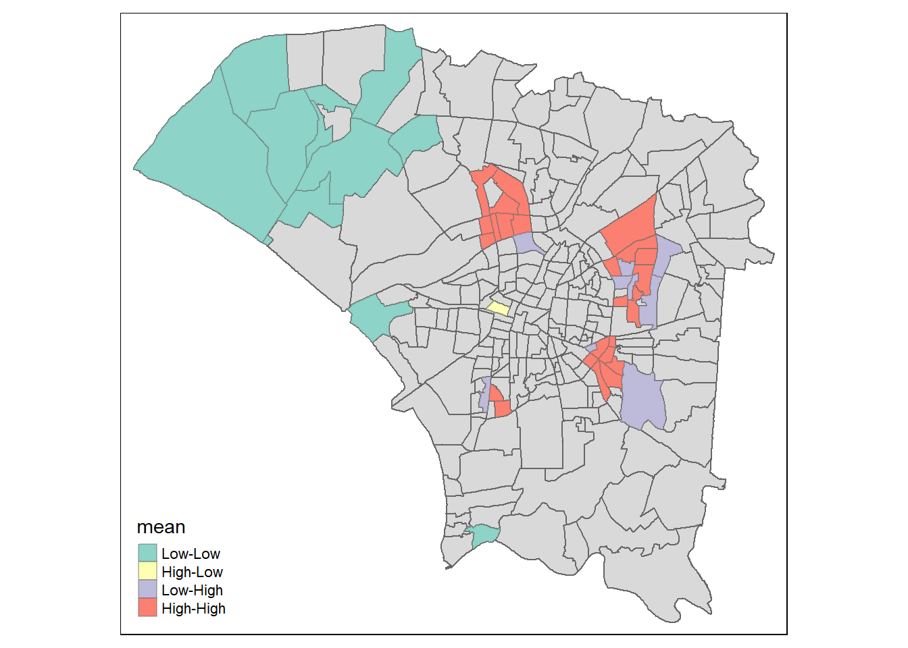
6 Hot & Cold Spot Area Analysis (HCSA)
6.1 Computing local Gi* statistics
wm_idw <- dengue_presc %>%
mutate(nb = st_contiguity(geometry),
wts = st_inverse_distance(nb, geometry,
scale = 1,
alpha = 1),
.before = 1)! Polygon provided. Using point on surface.Warning: There was 1 warning in `stopifnot()`.
ℹ In argument: `wts = st_inverse_distance(nb, geometry, scale = 1, alpha = 1)`.
Caused by warning in `st_point_on_surface.sfc()`:
! st_point_on_surface may not give correct results for longitude/latitude dataHCSA <- wm_idw %>%
mutate(local_Gi = local_gstar_perm(
Cases_per_village, nb, wt, nsim = 99),
.before = 1) %>%
unnest(local_Gi)
HCSASimple feature collection with 289 features and 18 fields
Geometry type: POLYGON
Dimension: XY
Bounding box: xmin: 120.0627 ymin: 22.89401 xmax: 120.2925 ymax: 23.09144
Geodetic CRS: TWD97
# A tibble: 289 × 19
gi_star e_gi var_gi p_value p_sim p_folded_sim skewness kurtosis nb
<dbl> <dbl> <dbl> <dbl> <dbl> <dbl> <dbl> <dbl> <nb>
1 -1.97 0.00269 1.96e-6 -1.74 0.0815 0.04 0.02 0.847 <int>
2 -1.06 0.00286 1.27e-6 -0.715 0.475 0.54 0.27 0.768 <int>
3 -0.403 0.00345 6.67e-7 -0.520 0.603 0.76 0.38 0.451 <int>
4 -0.505 0.00312 1.29e-6 -0.247 0.805 0.9 0.45 0.714 <int>
5 -2.10 0.00299 1.63e-6 -2.02 0.0432 0.02 0.01 0.625 <int>
6 -2.89 0.00299 1.26e-6 -2.53 0.0115 0.02 0.01 0.715 <int>
7 -1.18 0.00326 1.68e-6 -1.05 0.294 0.28 0.14 0.408 <int>
8 -1.18 0.00313 1.21e-6 -1.12 0.262 0.26 0.13 0.414 <int>
9 -0.401 0.00329 6.36e-7 -0.249 0.803 0.9 0.45 0.0594 <int>
10 1.12 0.00349 1.04e-6 1.32 0.187 0.28 0.14 0.442 <int>
# ℹ 279 more rows
# ℹ 10 more variables: wts <list>, VILLCODE <chr>, TOWNNAME <chr>,
# VILLNAME.x <chr>, VILLENG <chr>, TOWNID <chr>, TOWNCODE <chr>,
# VILLNAME.y <chr>, Cases_per_village <dbl>, geometry <POLYGON [°]>6.2 Visualising Gi*
tmap_mode("plot")tmap mode set to plottingtm_shape(HCSA) +
tm_fill("gi_star") +
tm_borders(alpha = 0.5) +
tm_view(set.zoom.limits = c(6,8))Variable(s) "gi_star" contains positive and negative values, so midpoint is set to 0. Set midpoint = NA to show the full spectrum of the color palette.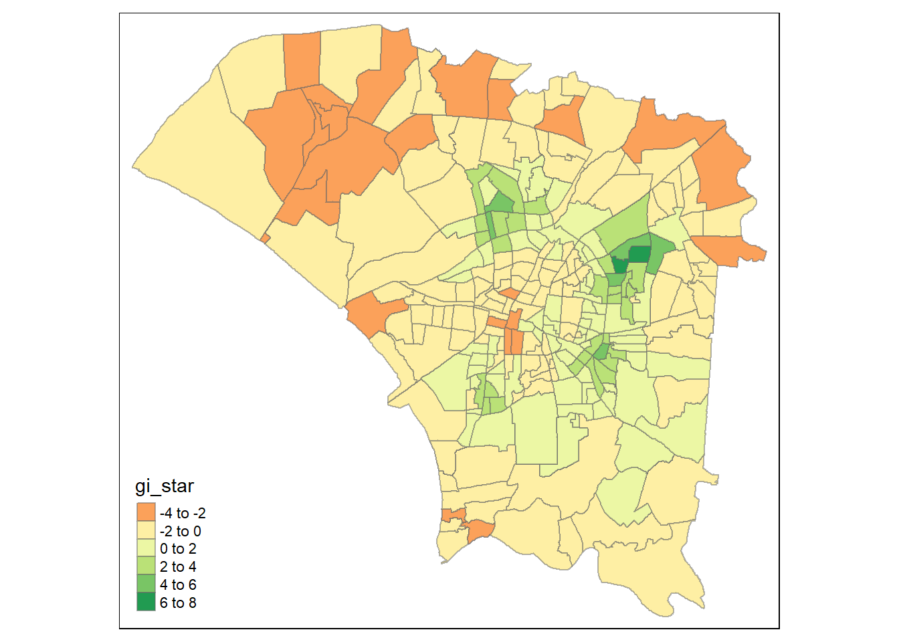
6.3 Visualising p-value of HCSA
tmap_mode("plot")tmap mode set to plottingtm_shape(HCSA) +
tm_fill("p_sim") +
tm_borders(alpha = 0.5)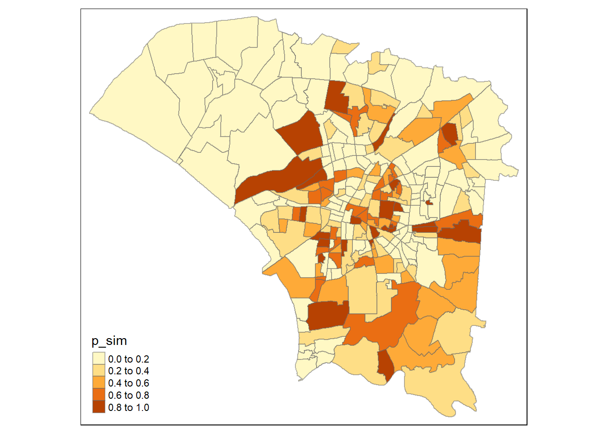
6.4 Visualising Local HCSA
tmap_mode("plot")tmap mode set to plottingmap1 <- tm_shape(HCSA) +
tm_fill("gi_star") +
tm_borders(alpha = 0.5) +
tm_view(set.zoom.limits = c(6,8)) +
tm_layout(main.title = "Gi* of Dengue Cases",
main.title.size = 0.8)
map2 <- tm_shape(HCSA) +
tm_fill("p_value",
breaks = c(0, 0.001, 0.01, 0.05, 1),
labels = c("0.001", "0.01", "0.05", "Not sig")) +
tm_borders(alpha = 0.5) +
tm_layout(main.title = "p-value of Gi*",
main.title.size = 0.8)
tmap_arrange(map1, map2, ncol = 2)Variable(s) "gi_star" contains positive and negative values, so midpoint is set to 0. Set midpoint = NA to show the full spectrum of the color palette.Warning: Values have found that are less than the lowest breakWarning: Values have found that are higher than the highest breakVariable(s) "p_value" contains positive and negative values, so midpoint is set to 0. Set midpoint = NA to show the full spectrum of the color palette.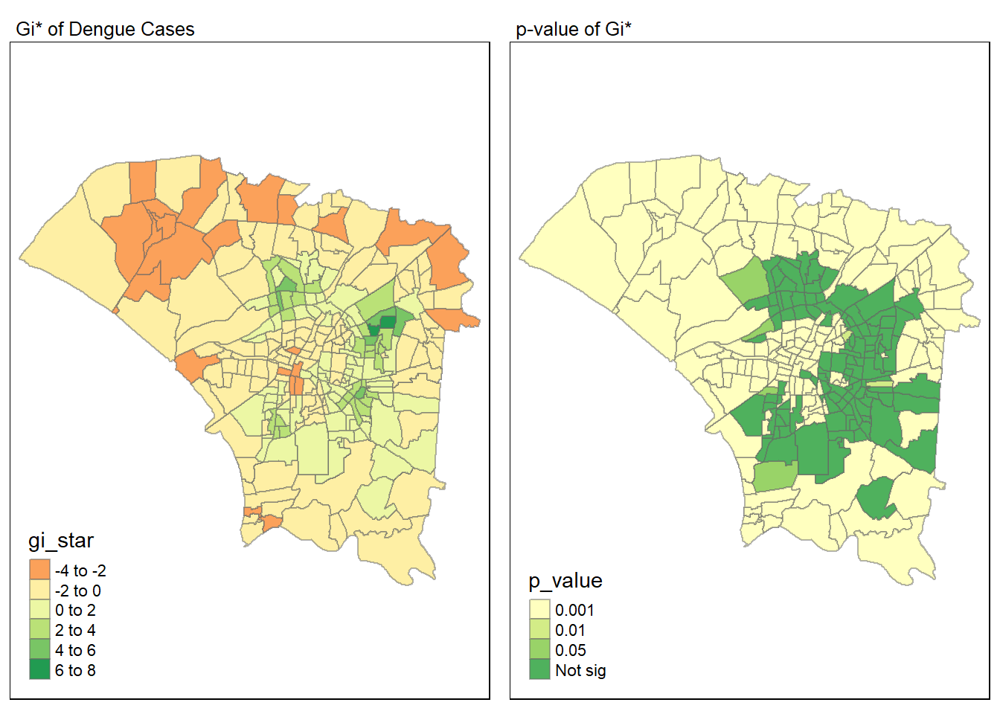
6.5 Visualising Hot & Cold Spot Areas
HCSA_sig <- HCSA %>%
filter(p_sim < 0.05)
tmap_mode("plot")tmap mode set to plottingtm_shape(HCSA) +
tm_polygons() +
tm_borders(alpha = 0.5) +
tm_shape(HCSA_sig) +
tm_fill("gi_star") +
tm_borders(alpha = 0.4)Warning: One tm layer group has duplicated layer types, which are omitted. To
draw multiple layers of the same type, use multiple layer groups (i.e. specify
tm_shape prior to each of them).Variable(s) "gi_star" contains positive and negative values, so midpoint is set to 0. Set midpoint = NA to show the full spectrum of the color palette.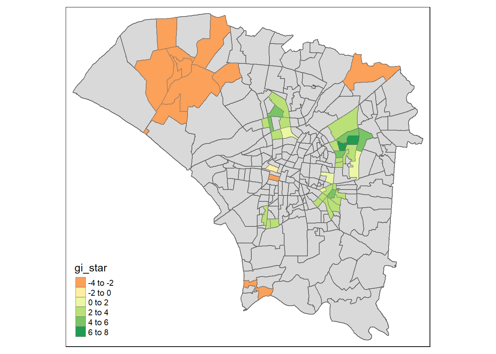
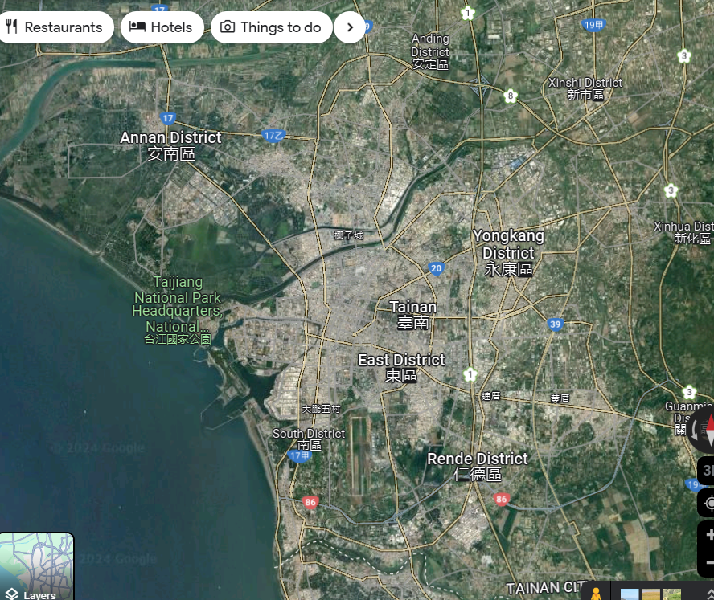
Comparing the hotspot-coldspot map alongside a rough overview of the same area on Google Maps, we can see that the coldspot to the north and west (south of the Zeng Wun River) is located in a less urban area, and zooming in reveals extensive farmland.
However the hotspot near the central Yan Shui river Yong Kang district can be observed to be relatively more urbanised, and zooming in reveals large water bodies surrounded by isolated areas adjacent to the urban hinterlands.
Similarly the hotspot to the east is a forested area with various water bodies nearby, surrounded by urban areas.
These observations are consistent with the known breeding grounds of the Aedes mosquito.
7 Emerging Hotspot Analysis
7.1 Creating a Time Series Cube
7.1.1 Getting the Data Columns
Our time data is located inside pruneddengue_sf, but this is not in the week integer format that we need. So first we must convert this.
week_dengue <- pruneddengue_sf %>%
mutate(Week = epiweek(`Date of Onset`)) %>%
select(-`Date of Onset`)
week_dengue$Week <- as.numeric(week_dengue$Week)final_dengue <- dengue_presc %>%
rename(VILLNAME = VILLNAME.x) %>%
select(-VILLNAME.y) %>%
filter(Cases_per_village != 0)
::: {.cell}
```{.r .cell-code}
# dengue_cube <- spacetime(final_dengue, week_dengue,
# .loc_col = "VILLNAME",
# .time_col = "Week"
# ):::
7.2 Verifying Space-Time Cube
Now we check that dengue_cube is indeed a space-time cube object.
# is_spacetime_cube(dengue_cube)